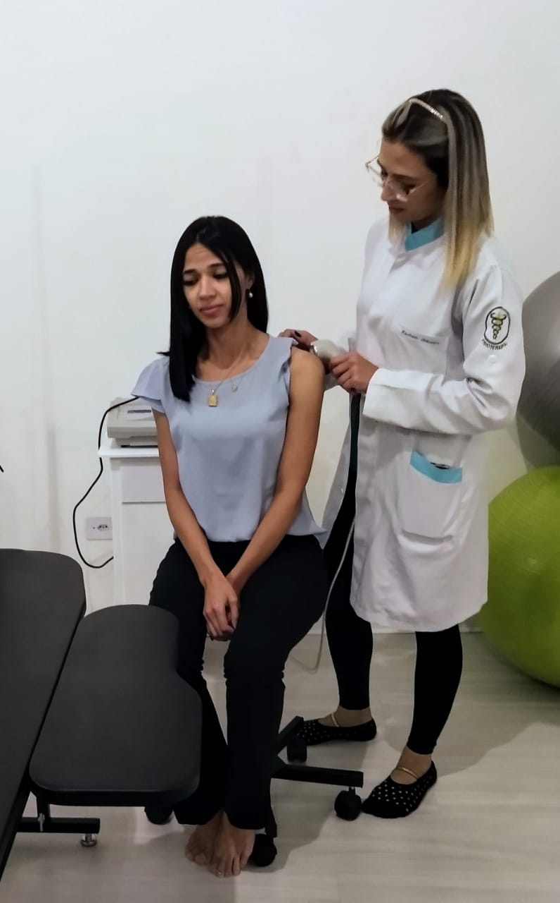
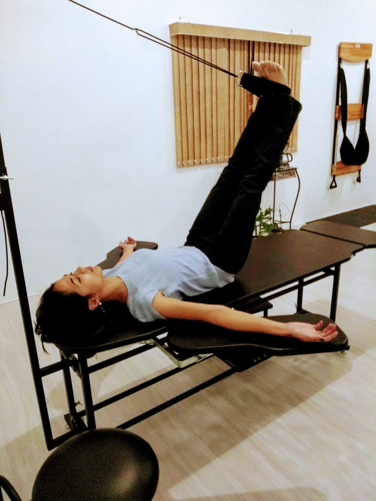
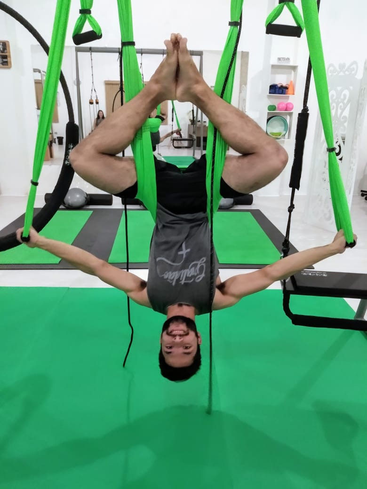
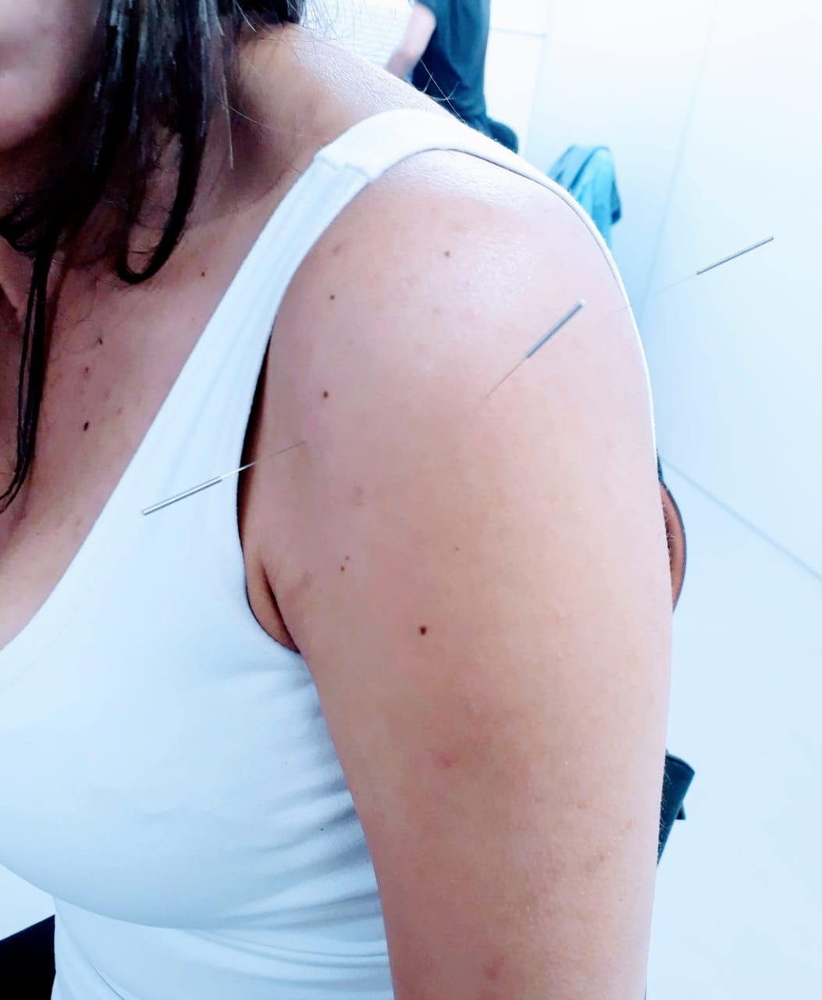
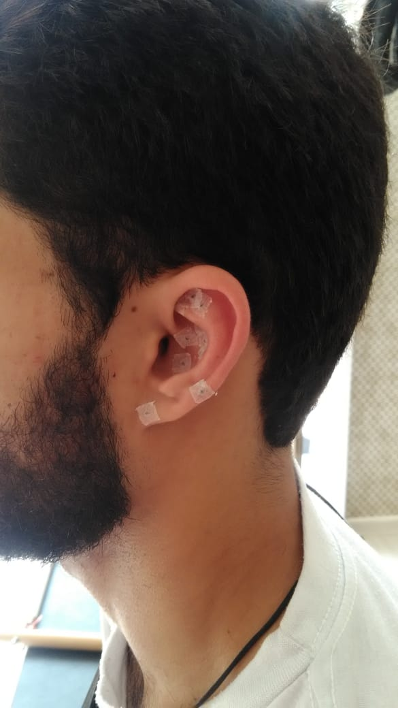
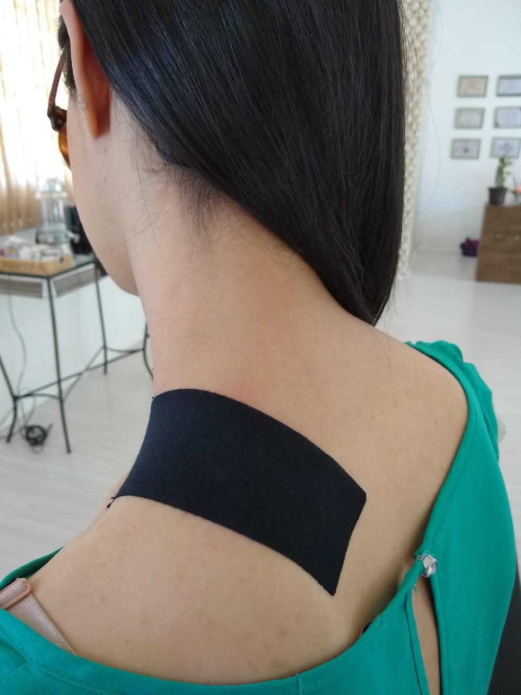

-
Fisioterapia
Fisioterapia ortopedica e neurologica é indicada para crianças, adultos e idosos com atendimentos individuais para uma melhor reabilitação.
-
RPG
Reeducação Postural Global tem por finalidade tratar desvios posturais e suas dores realinhando o corpo. Indicado para escoliose e desvios posturais.
-
Pilates
Atividade física que trabalha a mente, respiração, postura, coordenação motora, alongamento, fortalecimento, equilíbrio e relaxamento.
-
Dry Meedling
Tratamento com agulhas em pontos de tensão muscular, proporcionando em poucos minutos alívio da dor muscular.
-
Aculputura Auricular
Ativando pontos na orelha para vários tratamentos: dores em geral, emagrecer, ansiedade, depressão, tabagismo.
-
Kinesio Tape
Aplicação de faixas na pele: para relaxar determinados músculos ou auxiliar no ganho de força e movimento.